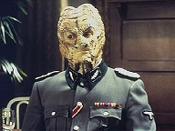
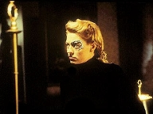
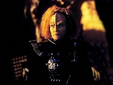
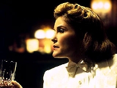
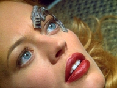
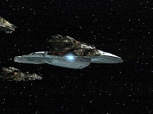

| MANCHETE
DO EPISÓDIO
Voyager
participa de jogo mortal
Episódio
anterior | Próximo episódio Sinopse:
Data Estelar: Desconhecida  Os
Hirogens tomam o controle da Voyager e implantam dispositivos na tripulação,
fazendo-os acreditar que são personagens do holodeck. Interagindo em uma
simulação da Segunda Guerra Mundial, Janeway é líder de um movimento secreto
de resistência à ocupação alemã em sua cidade, Sainte Clare. Seu grupo coleta
informações sobre as atividades nazistas e as envia aos Aliados. Ela se
esconde atrás da identidade de dona de uma casa noturna. Seven of Nine, sua
especialista em munições, é cantora de piano. Tuvok, o bartender, é
estrategista. Mas ele desconfia da lealdade de Seven. Suspeita que ela seja uma
espiã infiltrada.
Quando o comando dos Aliados envia uma mensagem codificada
avisando sobre a proximidade da invasão a St. Clare, os americanos pedem que o
grupo de resistência desative o sistema de comunicação dos alemães. Enquanto
isso, soldados Hirogens - no papel dos nazistas - ficam impacientes com a
simulação e começam a caçar os tripulantes da Voyager. Seven e Neelix são
feridos, mas levados para a Enfermaria. O Doutor é forçado a tratar dos
ferimentos dos colegas, minuto a minuto, por dias seguidos, e em seguida
enviá-los de volta aos holodecks. Ele e Harry - que permaneceu trabalhando na
Ponte, mantendo os sistemas da nave - começam a planejar secretamente um meio
de desligar as interfaces neurais.
 Enquanto Seven está na Enfermaria, o Doutor usa um de
seus implantes Borgs para se comunicar. Ela não se lembra de nada depois da
invasão dos Hirogen. O médico explica que a tripulação está sendo forçada
a interpretar papéis nos holodecks, com os protocolos de segurança desligados,
e diz que está elaborando um plano de reação, mas precisará de sua ajuda.
Seven é reenviada à simulação da Segunda Guerra com instruções de
encontrar o painel de controle e acessar a transmissão da Ponte. Somente assim,
Kim e o Doutor poderão desativar as interfaces dos outros colegas e organizar a
resistência aos invasores.
Com certa dificuldade,
Seven consegue acessar os controles do holodeck e o Doutor desativa o
dispositivo de Janeway. As duas fogem de um prédio de comunicações nazista no
momento em que os americanos - entre os quais estão Chakotay e Paris - chegam
na cidade. Começam os tiroteios. Uma bomba aérea explode no holodeck, mas, sem
os protocolos de segurança, ela destrói parte da holograde, revelando decks
internos da nave. Os soldados americanos pensam se tratar de uma instalação
nazista e invadem os corredores. Os Hirogen agora enfrentam uma guerra de
verdade. Comentários:
A apreciação do TB sobre "The Killing
Game" provavelmente seguirá na direção oposta da maioria dos reviewers
de Voyager. Isso porque este comentarista achou de verdade que o
segmento foi bem-sucedido em seus propósitos. Claro, há furos no roteiros,
alguns graves, mas eles não ofuscam o brilho de certas passagens da história
- sobretudo, a questão filosófica a respeito do futuro dos Hirogens.
 Tudo começa quando se descobre que os caçadores
tomaram o controle da Voyager, instalaram implantes neurológicos na
tripulação e a submeteram a simulações no holodeck. Janeway é uma Maquis
(veja que ironia) e Chakotay é um capitão dos Aliados. Tuvok, B'Elanna e
Seven são membros da resistência francesa. Paris, um soldado americano. De
início, chama a atenção a ótima direção de
David Livingston. Os cenários da Segunda Guerra (Katrine's, as instalações
nazistas, as ruas de Sainte Clare), o figurino, a iluminação, os efeitos
visuais - tudo é magnífico. A atenção aos detalhes é primorosa. Decerto,
o orçamento para o episódio foi maior do que a média. Também o ritmo aqui
é diferente. A história tem um passo mais dinâmico e tenta ser mais
encorpada que o normal, aliás, é característica marcante desses segmentos
duplos de meio de temporada da série. Virou uma espécie de tradição. O
equivalente do ano anterior foi "Future's
End".
O elenco tem boa distribuição de responsabilidades.
Houve um equilíbrio satisfatório. É claro que Janeway se sobressai, mas
isso tem tudo a ver com o contexto. Nada a repreender. As atuações
surpreendem. Jeri Ryan cativa a todos com sua voz. Até agora, nenhum fã
sabia que ela cantava! A gravidez avançada de Roxann Dawson também é muito
bem aproveitada. Todos os "personagens dos personagens" são
coerentes dentro do contexto manipulado pelos Hirogens.
 Mas o grande destaque foi mesmo Danny Goldring, no papel
do líder dos caçadores. Vez ou outra aparecem em cada povo pessoas
diferentes que vêem algo mais do que o senso comum e o status quo. E
é aqui que "The Killing Game" se destaca. O episódio é
alegórico, diz muito sobre a própria História humana - e isso é o que
tornou Jornada o sucesso que é. O Hirogen Alfa genuinamente se
preocupa com o futuro de seu povo. Tem uma sensibilidade a mais para enxergar
o que está por vir. Não se conforma com o comodismo e a estagnação e sabe
que espécies que não mudam estão fadadas ao desaparecimento. Para ele, os
Hirogens perderam a razão de ser. Deixaram-se cegar pelo prazer imediato
obtido pela rendição aos instintos predatórios primitivos. Abandonaram sua
cultura, sua História, seu diferencial.
Embora não seja mostrado em tela, quando o Alfa
encontra a Voyager, vê uma grande oportunidade de mudança - e até uma
salvação. De repente, fica claro para ele que sua raça não precisa mais
viver como lobos. Pode deixar a existência nômade e restringir as famosas
caçadas a ambientes simulados. É óbvio que essa visão política gera
medo. Os Hirogens não estão prontos para aceitar a idéia. Consideram-se
caçadores e tratam todos os outros como jogo, uma caça em potencial -
especialmente os forasteiros mais resistentes.
 Mas não são como os nazistas. Não se pode
fazer esse paralelo. O ato de caçar é o que os mantém vivos. É o seu modo de
obter novos conhecimentos sobre o universo. Ao promover a caçada, estudam sua
presa, seus comportamentos, movimentos, a forma de pensar. O hábito de guardar
itens das espécies derrotadas é, de uma forma muito esquisita, uma homenagem a
elas. O Kommandant é adepto desse significado e pretende revolucioná-lo. Seu
aprendiz, por outro lado, quer matar pelo ato de matar. Considera aquelas
sucessivas simulações uma grande perda de tempo. Sua impaciência e rebeldia
são sintomáticas e repercutirão na segunda parte do episódio.
Como se pode notar, até aqui o personagem
de Goldring foi o centro das atenções dos comentários - e é justamente esse
o ponto fraco de "The Killing Game". O segmento não trata da
Voyager ou de sua tripulação. Elas são meras coadjuvantes na história. Nada
se acrescenta à série a longo prazo. A figura essencial é mesmo o líder
Alfa, com suas idéias, devaneios e fantasias. Também há de se questionar como
os Hirogens são incapazes de criar a tecnologia dos holodecks, se têm a
habilidade de instalar sofisticados implantes nas vítimas com a função
específica de lhes fazer acreditar que são seus personagens nas simulações.
Parece bastante contraditório.
Uma outra dúvida capciosa. Se os Hirogens são
nômades, não têm lar fixo e não mencionam um planeta de origem, onde estão
as fêmeas de suas espécies? Será que elas ficam nas naves de guerra
acompanhando as caçadas? É melhor nem entrar muito nessa questão...
 Finalmente, a participação de Harry e o Doutor.
Quer dizer que eles passaram três semanas a serviço dos invasores,
assistindo à tortura de seus colegas sem fazer nada? Por que tanto tempo se
passou? Em última instância, o alferes não poderia ter sabotado os sistemas
da Voyager? Isso só é um pouco aliviado pela iniciativa tardia de montar um
movimento de resistência da própria tripulação. Aqui, sim, Harry mostra
coragem e age. Falta saber como suas conspirações com o médico - que resultam
em uma verdadeira guerra armada pelos corredores da nave - repercutirão. E que
venha a segunda parte da história!
Citações:
Hirogen Alpha - "Each Prey exposes us
to another way of life and makes us re-evaluate our own. Have you considered
our future? What would become of us when we have hunted this territory to
exhaustion?"
("Cada presa nos expõe a outro modo de vida e nos faz reavaliar o nosso
próprio. Já parou para pensar no nosso futuro? O que será de nós quando
tivermos caçado esse território até a exaustão?")
Oficial Hirogen - "We will travel to another part of space, search for
new prey, as we have always done."
("Viajaremos para outra parte do espaço à procura de novas presas, como
sempre fizemos.")
Hirogen Alpha - "A way of life that hasn't changed for a thousand
years."
("Um modo de vida que não mudou em milhares de anos.")
Oficial Hirogen - "Why should it?"
("Por que deveria?")
Hirogen Alpha - "Species that don't change, die. We've lost our way.
We've allowed our predatory instincts to dominate us. We disperse ourselves
throughout the quadrant, sending ships in all directions. We've become a
solitary race, isolated. We've spread ourselves too thin. We're no longer a
culture. We have no identity. In another thousand years no one will remember
the name Hirogen. Our people must come back together, combine forces, rebuild
our civilisation."
("Espécies que não mudam morrem. Perdemos o nosso jeito. Permitimos que
nossos instintos predatórios nos dominassem. Dispersamo-nos pelo quadrante,
mandando naves em todas as direções. Tornamo-nos uma raça solitária,
isolada. Espalhamo-nos demais. Não somos mais uma cultura. Não temos
identidade. Em mil anos, ninguém se lembrará do nome Hirogen. Nosso povo
precisa se reunir, combinar forças, reconstruir nossa civilização.")
Hirogen Alpha - "Shut down the
holo-emitters until we can regain control!"
("Desligue os holo-emissores até que consigamos retomar o controle!")
Kim - "I can't. The program controls are offline. You wanted a war?
Looks like you've got one."
("Não posso. Os controles do programa estão desativados. Você queria uma
guerra? Parece que conseguiu uma.")
Trivia:
 Na primeira cena do restaurante, Janeway se refere ao personagem de Seven no
holodeck como "Mademoiselle de Neuf". Em francês, significa
"Senhorita de Nove".
Na primeira cena do restaurante, Janeway se refere ao personagem de Seven no
holodeck como "Mademoiselle de Neuf". Em francês, significa
"Senhorita de Nove".
Embora os roteiristas não tenham aproveitado a oportunidade para traçar
paralelos, o termo "Maquis" se originou do nome da resistência
francesa na Segunda Guerra Mundial.
Um dos veículos mostrados nas cenas da Segunda Guerra é um Citroen 2CV. Esse
carro só foi desenvolvido após o conflito real e o que aparece em tela é, na
verdade, uma edição especial do modelo Charleston, dos anos 1980.
O alferes que ajuda Harry no episódio aparece diversas vezes em Voyager.
Mas também fez uma ponta no filme "First Contact".
Danny Goldring
interpretou Burke no episódio "Nor the Battle to the Strong",
de Deep Space Nine. Em Enterprise, fez um capitão alienígena em "The
Catwalk".
Mark Deakins apareceu em no filme "Inssurection".
Em Voyager, fez Axum nos episódios "Unimatrix Zero, Parts I
& II".
J. Paul Boehmer participou de vários
projetos ligados a Jornada. Interpretou Vornar em "Tacking into
the Wind", de Deep Space Nine. Voltou na quinta temporada de Voyager
como o zangão de "Drone". Fez Melkor, no jogo "Star Trek
- Klingon Academy" e nada menos que três personagens no game "Star
Trek - Bridge Commander" (Gul Sek, capitão Joshua Martin, embaixador
Saalek). Também apareceu em "Carbon Creek", "Zero Hour"
e "Storm Front, Part I", de Enterprise.
Paul Eckstein foi dublador no jogo
"Star Trek - Armada". Foi Limara 'Son em "Rocks and Shoals"
e um soldado Jem 'Hadar em "The Dogs of War", ambos de Deep
Space Nine. Voltou a Voyager como Yost ("Gravity"),
Hirogen Alfa substituto ("Flesh and Blood, Parts I & II") e
como Morak ("Prophecy"). Ficha
técnica: Direção de
David Livingston
Escrito por Brannon Braga e Joe Menosky
Exibido em
04/03/1998
Produção: 086 Elenco: Kate
Mulgrew como Kathryn Janeway
Robert Beltran como
Chakotay
Roxann Biggs-Dawson como B'Elanna Torres
Robert
Duncan McNeill como Tom Paris
Ethan Phillips como
Neelix
Robert Picardo como Doutor
Tim Russ
como Tuvok
Jeri Ryan como Seven of Nine
Garrett Wang como Harry Kim Elenco
convidado:
Danny Goldring como Hirogen Alpha
Mark Metcalf como Médico Hirogen
Mark Deakins como Oficial da SS
Hirogen
J. Paul Boehmer como Kapitan
Paul Eckstein como Hirogen jovem
Peter Hendrixson como Klingon
Episódio
anterior | Próximo episódio
|